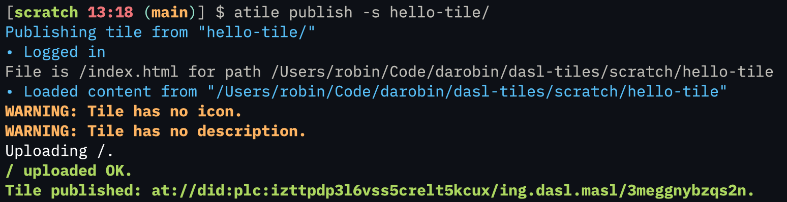
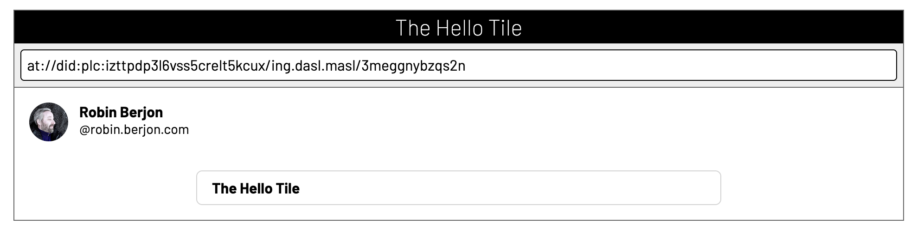
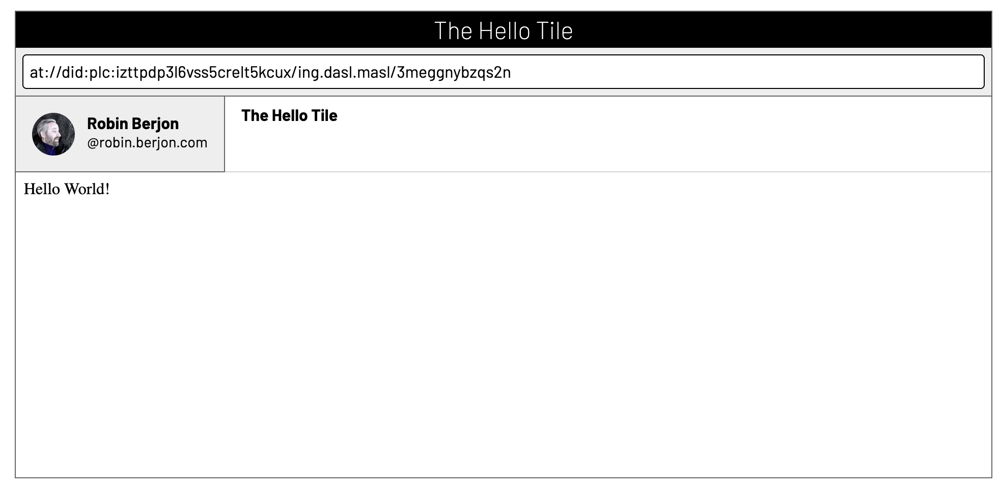
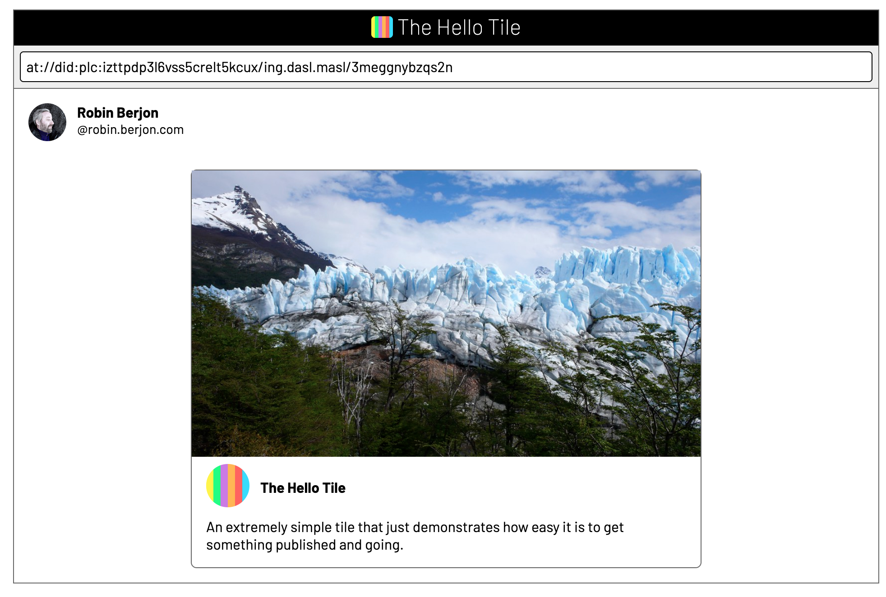

Examples
It's still pretty early days and we're still in the process of making demos. There isn't much yet — but we'll keep adding, and you can add yours too!
Tutorial
Tiles are extremely simple to create and deploy, on the assumption that: you have an AT account, you have some very basic knowledge of how to use the command line, and you can build simple web content.
Let's just dive in!
Preliminaries
This section covers steps that you'll only need to do once to set yourself up.
First, let's install the atile command globally.
npm install -g @dasl/tiles
If that runs without error, you can check that you have it:
$ atile Usage: atile [options] [command] Manipulating tiles on the AT protocol Options: -V, --version output the version number -h, --help display help for command Commands: login <handle> <appPassword> log a handle into AT so that you can post logout <handle> log a specific handle out default-user <handle> set the default handle to use when unspecified list-users list all logged in handles you have publish [options] <dir> publish a tile to the Atmosphere delete [options] <dirOrATURL> delete a tile from the Atmosphere help [command] display help for command
If you see some output similar to the above, then you're good!
The next step is that you need to create an app password. Using Bluesky, you can do it from the relevant settings page.
Using your app password, you can now login for the corresponding handle:
atile login robin.berjon.com hunter2
That's it! You're all set up to be publishing tiles.
Hello World!
Let's start by making a very very boring tile that has zero frills and just says "Hello World!" First, you want a directory for the tile's content to live in:
mkdir hello-tile
Then let's just create an HTML document to say "hello world" with. A tile
must have a root path (the path of which is /). The
atile command just looks for the classic index.html
to use for that, so we'll use that name.
echo '<p>Hello World!</p>' > hello-tile/index.html
The other resource that's required for a tile is a manifest. Because
producing a correct tile manifest can be a little bit of work,
atile generates almost all of it for you. However, you
still need a name for your tile (which is like an app name — tile
manifestes are derived from Web App Manifests). There are other things
that you can put in a manifest, but let's just start with the minimum.
echo '{"name":"The Hello Tile"}' > hello-tile/manifest.json
And that's all the coding we'll need — one line in each of two files — to get something up there. We can now publish it:
atile publish -s hello-tile/
The command is simple: it publishes the path to the specified directory. The -s
option is used to that atile will keep a mapping from that directory to the
specific identifier used for that tile. This means that if you run the command again, it
will update the tile on AT instead of creating a new one. (If you don't want to rely on the
directory path remaining stable, you can use the -t paramters to specify the TID.)
The output should look like the following:

If you know go to open the tile in the tile browser, you will see something like this (except with your avatar):

It's important to understand that tiles can be rendered in multiple ways. Because they have metadata that's published on AT, you can simply use that metadata to render a card (just like link cards), which is useful if you don't want potentially hundreds of active tiles executing at the same time as they appear in a feed. Because we've given very limited metadata, there really isn't much to go on for the card, so you only get its name. If you click on the card, you activate the tile, which triggers the most important rendering move: live tiles. It looks like this:

This tile isn't doing much but it's a full-fledged web app that's safely executing in a secluded context. All you need to do is to add CSS, JS, etc. and republish!
Refinements
First, let's give it an icon. Because I'm lazy, I'll just copy the
Web Tiles icon into icon.png
at the root of the tile. (It doesn't have to be there or to be called that.)
Similarly, I'll use this random picture
saved to /banner.jpg (also arbitrary) as the banner for the card.
{kind=link}
We can then update manifest.json to the following:
{
"name": "The Hello Tile",
"description": "An extremely simple tile that just demonstrates how easy it is to get something published and going.",
"icons": [{ "src": "/icon.png" }],
"screenshots": [{ "src": "/banner.jpg" }]
}
Note that both icons and screenshots are plural and take an
array. This is for compatibility with
Web App Manifests
(and I expect that tiles implementations will make use of the ability to specify alternatives).
Also note that the paths are prefixed with /. That's because all paths in the
manifest must be absolute with respect to the root of the tile. When atile
generates the complete manifest, it creates a resources entry that maps
/icon.png and other files to the CID (Content IDentifier)
for that file along with important metadata like its MIME type. The icons's
src must map to that so that it can be found at run time.
You can then republish:
atile publish -s hello-tile/
That generates a much more colourful card:

Clicking through will produce the same result as before because we haven't updated the code. That part is up to you!